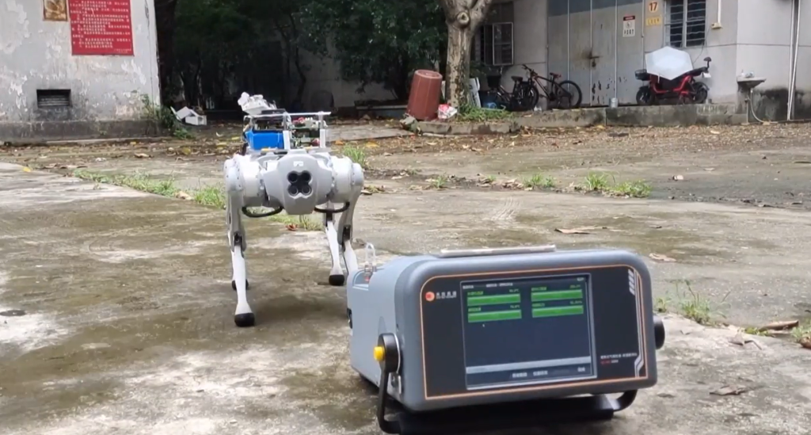

Cão-robô que coleta ar tóxico em lugares perigosos é criado por pesquisadores
Pesquisadores desenvolveram um cão-robô que coleta partículas de ar para permitir
a análise da composição da atmosfera em situações potencialmente perigosas.
Equipada com um braço articulado, a ferramenta em desenvolvimento consegue chegar a locais inacessíveis aos seres humanos.
Nos testes, o dispositivo foi enviado para aterros sanitários, sistemas de esgoto,
locais de incêndio e armazéns de produtos químicos.
O protótipo capturou o ar desses ambientes e permitiu a busca por compostos orgânicos voláteis (VOCs) perigosos.
Publicado na revista Analytical Chemistry, da ACS, o estudo apresenta a descrição dos testes feitos com o cão-robô.
Realizando uma tarefa que seria muito perigosa para técnicos humanos,
o robô acessa os ambientes com um ar potencialmente tóxico e retorna o material para um espectrômetro de massa portátil
— instrumento que permite a análise da composição da amostra.

O estudo comprovou que o dispositivo faz esse trajeto em menos tempo do que uma pessoa levaria para transferir as amostras para um laboratório externo.
A equipe planeja, no futuro, desenvolver sistemas móveis de detecção de gases perigosos e compostos orgânicos voláteis para inseri-los em dispositivos que possam,
assim como o cão-robô, ser controlados remotamente, como drones aéreos e pequenos navios.
O que são 'cookies' na internet e como eles funcionam?
"Clique para aceitar nossos cookies". A frase já se tornou usual para milhões de usuários.
Entenda para que eles foram criados e quais as opções para quem navega na internet.
Os cookies são arquivos criados por sites para coletar informações sobre a sua navegação na internet.
Eles são transferidos para o seu dispositivo e podem servir para vários objetivos, como oferecer mais comodidade. Isso inclui, por exemplo, manter a conta de um serviço ativa para você não precisar preencher login e senha toda vez, ou salvar os itens que você colocou anteriormente no carrinho de compras do site de uma loja.
O aviso "Clique para aceitar nossos cookies" que vemos ao acessar algum site, por sua vez, tem relação com a Lei Geral de Proteção de Dados (LGPD), que prevê a possibilidade de multas para quem descumprir regras sobre tratamento de informações.
Ela é inspirada no Regulamento Geral sobre a Proteção de Dados (GPDR), criado pela União Europeia em 2018.
Em vários casos, antes de clicar em "Aceitar cookies", é possível selecionar botões como "Minhas opções" para alterar o que será armazenado. Mas, na pressa, algumas pessoas acabam optando por aceitar tudo. Veja abaixo perguntas e respostas sobre o tema.
Existe algum risco?
Em geral, os cookies não representam perigo, já que eles costumam guardar códigos aleatórios – e não dados pessoais – para identificar usuários.
Ainda assim, sites com práticas não recomendadas podem usá-los para armazenar nome, e-mail ou telefone, por exemplo.
É o que explica Fabio Assolini, analista sênior da Kaspersky no Brasil.
"Um website poderá guardar qualquer informação em um cookie, incluindo dados pessoais do usuário cadastrado – o que,
claro, não é recomendado", destaca Assolini.
Mesmo sem coletar dados pessoais, os arquivos podem ter informações sobre seu histórico na internet.
Cookies de terceiros, presentes em mais de um site, são capazes de identificar os termos que você busca e mostrar anúncios publicitários sobre eles em outras páginas, por exemplo.
Em dispositivos compartilhados por várias pessoas, há um risco com cookies que mantêm sua conta logada. Com eles, terceiros podem acessar livremente suas contas. A dica nesses casos é sempre fazer o logout,
isto é, encerrar a sessão antes de deixar de usar o dispositivo.
O analista também destaca que há meios de limitar a coleta informações por meio de cookies.
"Você pode configurar o seu navegador para apagar os cookies, usar bloqueadores de propaganda,
bloqueadores de rastreadores que também usam cookies", diz Assolini
Por que pedem que o usuário aceite os cookies?
Alguns sites passaram a mostrar o aviso sobre cookies para cumprir regras da GDPR, que precisa ser seguida por empresas que processam dados de pessoas que estão na União Europeia, mesmo que não estejam sediadas na região.
O regulamento europeu determina que sites devem receber consentimento para usar cookies, exceto em casos necessários. Ele também indica que, após a autorização dos usuários, as páginas devem oferecer o mesmo destaque para uma opção de voltar atrás e retirar a permissão.
O Brasil não tem uma lei específica sobre cookies, mas especialistas apontam que seu uso é analisado no contexto do tratamento de dados. Pela LGPD, os sites que operam informações de usuários devem seguir alguns princípios, como os de necessidade, finalidade e transparência.
No entanto, Mariana explica que, "uma vez que se considere a coleta de cookies um tratamento de dados pessoais, a LGPD se aplica como um todo, logo suas regras gerais devem ser seguidas".
Segundo Paulo Rená, professor de direito do Centro Universitário de Brasília (CEUB), é preciso ficar claro para o usuário o motivo para o cookie ser coletado. "Tem que ser dito que os dados vão ser usados porque senão o site não funciona ou que tem alguns usos que são só para publicidade", afirma.
Geralmente, essas detalhes são apresentados na Política de Privacidade dos sites.
O que acontece se eu não aceitar?
Em alguns sites, os avisos de cookies permitem controlar o que será coletado. Os termos variam, mas essas janelas costumam destacar a coleta de cookies necessários, que não pode ser desativada para não comprometer o funcionamento da página.
Entre os cookies que podem ser recusados, estão os de marketing, que rastreiam sua navegação para mostrar anúncios; os funcionais, usados para o site lembrar que a conta está logada, por exemplo; e os de estatísticas, que servem para a página criar relatórios sobre a quantidade de visitas.
Venda ilegal de celulares triplica em um ano; entenda os riscos de aparelhos irregulares
Aparelhos entram no Brasil sem pagar impostos e, em alguns casos, chegam a ser 30% mais baratos do que celulares de empresas que seguem todas as regras.
Ainda que pareçam vantajosos, eles podem trazer prejuízo se usarem materiais de baixa qualidade.
Um concorrente que triplicou de tamanho e já representa 25% das vendas de celulares no Brasil criou um sinal de alerta nos demais fabricantes. O problema é que não se trata de uma marca, e sim de contrabando.
Esses aparelhos, em sua maioria chineses, entram no Brasil de forma ilegal, sem pagar impostos, e têm preços muito mais vantajosos. Em alguns casos, eles são 30% mais baratos do que celulares de empresas que seguem todas as regras.
E estão disponíveis em cada vez mais lojas: Amazon e Mercado Livre tiveram que tirar ofertas dos maiores vendedores de celulares irregulares de seus marketplaces, em que terceiros podem usar os sites como vitrines para anunciar seus produtos.
A oferta em canais conhecidos, aliada aos descontos agressivos e à possibilidade de entrega rápida, são alguns dos fatores que têm levado ao aumento do mercado de celulares irregulares no Brasil, segundo especialistas ouvidos pelo g1.
Esse segmento, também chamado de mercado cinza, parece vantajoso no primeiro momento, mas pode trazer mais prejuízos aos compradores .
O que é o mercado cinza de celulares?
O mercado cinza (ou o comércio irregular) de celulares se refere a produtos que, de alguma forma, não seguem todas as regras estabelecidas pelas fabricantes.
Isso envolve principalmente a falta da certificação desses aparelhos por parte da Agência Nacional de Telecomunicações (Anatel) ou de outro órgão aceito por ela.
Mas a conta também inclui celulares roubados ou que tiveram especificações técnicas alteradas sem aprovação da fabricante.
Por que o mercado de celulares irregulares cresceu no Brasil?
O contrabando de celulares sempre teve muita visibilidade por envolver produtos que são pequenos – e,
consequentemente, fáceis de transportar – e que têm alto valor no mercado.
Mas esse mercado aumentou com o crescimento de lojas online, de acordo com Luiz Claudio Carneiro, diretor de dispositivos móveis de comunicação da Associação Brasileira da Indústria Elétrica (Abinee),
que representa as fabricantes de celulares.
No primeiro trimestre de 2024, foram vendidos 8,5 milhões de smartphones legais. No mesmo período, 2,9 milhões de unidades do tipo foram comercializadas no mercado irregular.
A retirada de anúncios de smartphones irregulares de Amazon e Mercado Livre foi uma ordem da Secretaria Nacional do Consumidor (Senacon), que acatou uma denúncia da Abinee.
Para apresentar a denúncia, a associação comprou alguns celulares para confirmar as irregularidades e analisou os 50 maiores vendedores de aparelhos indevidos, que, em alguns casos, comercializavam 5.000 smartphones por mês.
Os celulares irregulares ficam mais baratos por não pagarem PIS/Cofins, IPI, ICMS e Imposto de Importação, segundo a Abinee. Estes impostos são cobrados das marcas que atuam legalmente no país.
Como o mercado cinza afeta a venda legal de celulares?
O comércio legal de smartphones teve uma pequena queda de 0,5% no primeiro trimestre de 2024, em relação ao mesmo período do ano passado. E, na comparação com o quarto trimestre de 2023, houve um crescimento de 5%.
Mas é a expansão do mercado irregular que preocupa, já que ela afeta toda a cadeia: desde fabricantes de componentes dos celulares até instituições de ensino que recebem investimentos em pesquisa e desenvolvimento com base no faturamento das marcas.
E consumidores estão aceitando investir cada vez mais para ter celulares irregulares: enquanto o preço médio no comércio legal cresceu 3%, o do mercado cinza subiu 26% (na comparação entre o primeiro trimestre de 2024 e o mesmo período de 2023).
Quais são os riscos de comprar celulares que não têm autorização?
Ainda que muitos celulares do "mercado cinza" possam funcionar corretamente, eles oferecem mais riscos aos consumidores do que os vendidos legalmente. Segundo a Anatel, esses aparelhos podem:
📝 Não oferecer o período de garantia da representante da marca no Brasil, porque os aparelhos foram comprados no exterior;
📞 Registrar quedas de chamadas e falhas na conexão de internet por não necessariamente seguirem padrões de redes nacionais;
📱 Colocar usuários em risco por usarem softwares maliciosos que têm acesso indevido a dados pessoais;
🪫 Usar material de baixa qualidade e apresentar mau funcionamento de baterias pela falta de avaliações quanto à segurançaelétrica e os limites de exposição a campos eletromagnéticos, o que pode expor usuários a níveis inadequados de radiação;
📡 Causar redução da cobertura de telefonia se forem usados em larga escala, o que acontece por conta do desempenho ruim – se muitos aparelhos usam capacidade acima da necessária na comunicação com a rede, as antenas de telefonia passam a atender menos dispositivos.
Celulares sem certificação também podem causar riscos de explosões e superaquecimento, segundo a Associação Brasileira de Avaliação da Conformidade (Abrac), que reúne laboratórios responsáveis por analisar se produtos seguem atendem aos padrões necessários.
"O rito de homologação da Anatel contempla questões de segurança, onde o aparelho é estressado através da submissão a condições anormais de uso para garantir que, mesmo diante de condições mais críticas, os usuários não corram nenhum tipo de risco", disse Kim Rieffel, vice-presidente de Telecomunicações da Abrac.
Como descobrir se um celular é irregular?
Um preço muito abaixo do normal é o primeiro sinal de que o celular pode ser irregular. Mas também é possível indicar que o aparelho tem origem suspeita se:
O anúncio incluir termos como "global version" (versão global), sugerindo que o aparelho não foi fabricado especificamente para o Brasil;
Nas especificações, o campo do número de homologação do celular na Anatel estiver em branco;
O vendedor informar o código de barras (também chamado de EAN), e o número começar com 693, 694 ou 695, apontando que o produto é voltado para a China – o EAN do Brasil começa em 789 e 790;
O vendedor oferecer garantia de até 90 dias – o mercado legal costuma oferecer um ano de garantia;
O aparelho não vem com manual de instruções em português do Brasil, e seu carregador não está no padrão brasileiro.
A Anatel também conta com uma ferramenta que indica se o celular tem certificação e, portanto, se é regular. Basta visitar este link e informar o IMEI, que pode ser encontrado na caixa ou na bateria do celular ou ao ligar para *#06#.
Batizado de Consulta Celular Legal, o site também diz se o smartphone foi roubado ou furtado. Em todas essas situações, a agência pode bloquear a conexão do aparelho e impedi-lo de fazer ligações e se conectar à internet.
Se houver irregularidade sobre a certificação, ele apresenta a mensagem "O IMEI informado possui restrição de uso". Neste caso, a orientação é entrar em contato com a loja que vendeu o aparelho ou com a fabricante.